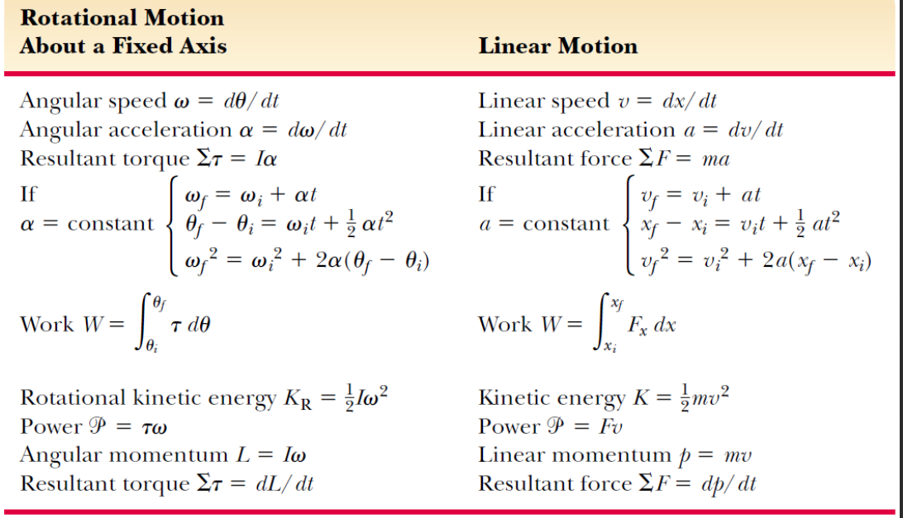

普通物理学
Dictionay
conservative forces 保守力 potential energy 势能 momentum 动量 inelastic collision 非弹性碰撞 torque 力矩 moment of inertia 转动惯量
Lecture
Lecture 1:Motion in 1 D
Lecture 2:Vectors
Lecture 3:NewTon Laws
Lecture 4:Works Energy
Lecture 5:Energy Conservation
Lecture 6:Momentum Conservation
Lecture 7:Gravity
Lecture 8:Rotation Fixed Axis
- 刚体:顾名思义,很"刚"的物体(bushi).刚体指在运动中和受力作用后,形状和大小不变,而且内部各点的相对位置不变的物体.刚体中的点会受到强大的内力,正是这部分内力让他们保持相对位置不变
- 角速度,角速度$\omega$在转动中的地位大抵等同于速度$v$在平动中的地位,其单位为$rad/s,方向可以用右手螺旋定则来判断$在后面我们会发现:转动体系中的各种公式几乎都与平动中的公式一一对应. $$ \Delta\theta = \theta_f - \theta_i,\overline{\omega} \equiv {\theta_f - \theta_i \over t_f-t_i} = {\Delta \theta \over \Delta t},\omega \equiv \lim_{\Delta t \to 0}{\Delta \theta \over \Delta t} = {d \theta \over dt} $$
- 角加速度:与平动中的加速度类似,其单位为$rad/s^2$我们可以定义角加速度: $$ \overline{\alpha} \equiv {\omega_f - \omega_i \over t_f-t_i} = {\Delta \omega \over \Delta t},\alpha \equiv \lim_{\Delta t \to 0}{\Delta \omega \over \Delta t} = {d \omega \over dt} $$
- 线速度:线速度是指转动的物体上的某一点转动的速度,其方向随着物体的转动而不断改变. $$ v={ds \over dt}=r{d \theta \over dt} \Rightarrow v=r \omega $$
- 加速度:
- 切向线加速度: $$a_t = {dv \over dt} = r{d \omega \over dt} \Rightarrow a_t = r\alpha$$
- 径向加速度,由高中所学的公式: $$a_r={v^2 \over r}=r \omega^2$$ 因此,点的加速度为: $$\vec a=\vec a_t+\vec a_r=r \sqrt{\alpha^2+\omega^4}$$
- 转动惯量:转动惯量是刚体绕轴转动时对其惯性的量度,其符号一般为$I$或$J$,与平动中的质量类似,但与质量不同的是,转动惯量并非物体的固有性质,其大小与转动轴的选取有关.下面我们利用平动与转动的对应关系导出转动惯量的表达式: $$ K = \sum _i K_i = \sum_i {1 \over 2}m_iv_i^2 = \sum_i {1 \over 2} m_ir_i^2\omega^2$$ 之前我们说过:角速度$\omega$的地位与平动中的速度$v$类似,因此我们可以将能量表达式中剩下的一部分$\sum_im_ir_i^2$视为转动体系中的"质量",即转动惯量$I$,所以有: $$K = {1 \over 2}I\omega^2,I \equiv \sum_i m_ir_i^2$$ 常见几何体的转动惯量的推导
- 力矩:高中时我们已经通过杠杆原理对力矩有了初步的了解,力矩的符号一般为$\tau$或$M$,以下的定义是比较易于理解的: $$\tau \equiv rFsin\phi=Fd,\vec \tau= \vec F \times \vec r$$ 值得注意的是:力矩的方向并非与力的方向相同,而是与$\vec F$和$\vec r$代表的平面垂直,具体方向可以用右手螺旋定则判定 但是我们还可以通过平动与转动的对应关系得到力矩$\tau$的另一种定义方式: $$ d\tau = rdF=ardm,a=r \alpha \Rightarrow d\tau =(rdm)\alpha r = (r^2dm)$$ $$so \quad \sum \tau =\int (r^2dm)\alpha=\alpha \int r^2dm=I\alpha \quad or \quad M=J\alpha$$
- 功和功率:$$dW=\vec Fds=(Fsin\phi)rd\theta=\tau d\theta,P={dW \over dt}=\tau {d\theta \over dt}=\tau \omega$$ 如果继续推导,同样可以得到与平动中类似的结论: $$\sum\tau= I\alpha =I{d\omega\over d\theta}{d\theta \over dt}=I{d\omega \over d\theta }\omega \Rightarrow \sum \tau d\theta=dW=I\omega d\omega$$ $$\therefore \sum W=\int_{\theta_i}^{\theta_f}\sum\tau d\theta=\int_{\omega_i}^{\omega_f}I\omega d\omega={1 \over 2}I\omega_f^2-{1 \over 2}I\omega_i^2 $$ 下面的图表直观得展示了平动与转动之间的对应关系: 
Lecture 9:Coriolis Effect
Lecture 10:Angular Momentum
- 角动量,角动量和动量之间的物理意义貌似没有什么很好的关联(也许是我还没想到),但依旧可以通过平行关系记忆角动量的定义式: $$Momentun \quad P=Ft \ Angular\ Momentum \quad \vec L=\vec\tau t=\vec F\times \vec rt=\vec P\times \vec r,L=mvrsin\phi$$